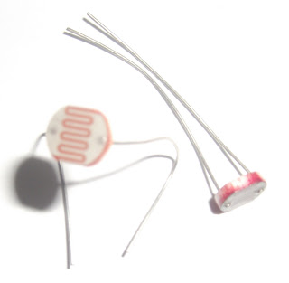
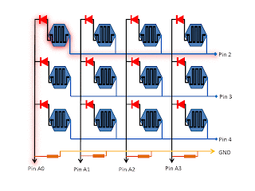
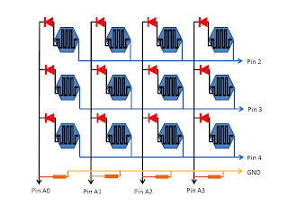

Dada a impossibilidade de usar uma câmera como sensor no arduino, pensei na possibilidade de construir uma espécie de CCD de muito baixa resolução, utilizando LDRs. Pesquisando na internet encontre este site com um excelente trabalho na criação de uma mesa com 64x64 LDRs. Decidi então construir uma pequena matriz, 3x4, para testes.
{kind=link}

O LDR (Light Dependent Resistor) como o próprio nome sugere é um resistor que tem sua resistência variada em função da luz que incide sobre ele. Quanto maior a luz menor a resistência. Se ligado a uma entrada analógica do arduino tem-se um valor proporcional à luz que incide sobre o LDR teoricamente entre 0 e 1024.
{kind=link}

A ideia principal é ler através da porta analógica do Arduino cada LDR e enviar esses valores ao processig que, pro sua vez usa estes valores para determinas o tom de cinza de um retângulo formado por doze quadrados, cada um corresponde ao LDR na mesma posição.{kind=link}

Ao lado é mostrado o diagrama dos LDRs e uma animação que ilustra como a leitura é feita na matriz. Coloca-se o pino 2 em nível alto e procede a leitura das entradas analógicas A0, A1, A2 e A3 armazenado os valores nas variáveis correspondentes ao primeiro, segundo, terceiro e quarto LDRs o mesmo acontece na segunda linha, pino 3, LDRs cinco a oito e na terceira linha, pino 4. LDRs nove a doze.A montagem foi feita em uma placa perfurada padrão. Os diodos são 1N4148, mas podem ser substituídos por equivalentes. Eles são responsáveis em garantir que um LDR não interfira na leitura de outro. Os resistires são de 10 kohm.
Os programas foram baseados no exemplo SerialCallResponse que acompanha a IDE do Arduino. O exemplo ensina como enviar bytes do arduino a processing e do processing ao arduino. No programa abaixo o arduino envia 12 bytes, um para cada valor lido nos LDRs. Antes de ser enviado o valor é ajustado para um valor entre 0 e 255. O processing recebe os bytes e usa-os para determinar o tom de cinza do quadrado correspondente.
Programa para o arduino:
const int ldr[4] = {A0, A1, A2, A3};
const int vccPin[3] = {2,3,4};
int ldrValue;
void setup() {
Serial.begin(19200);
pinMode(vccPin[0], OUTPUT);
pinMode(vccPin[1], OUTPUT);
pinMode(vccPin[2], OUTPUT);
estabeleceContato(); // Envia um byte "A" ate obter resposta do processing
}
void loop() {
for(int i = 0; i < 3; i++)
{
digitalWrite( vccPin[i],HIGH);
for(int j = 0; j < 4; j++)
{
ldrValue = analogRead(ldr[j]); // le o LDR correspondente
ldrValue = constrain(ldrValue, 0, 800); // ajusta valor lido
ldrValue = map(ldrValue,0,800,0,255); // ajusta valor lido
Serial.write(ldrValue); // envia valor via porta serial
}
digitalWrite( vccPin[i],LOW);
}
} // fim do loop principal
void estabeleceContato() {
while (Serial.available() <= 0) {
Serial.write('A'); // envia A ate estabelecer contato
delay(300);
}
}
// Adaptado do exemplo SerialCallResponse que acompanha a IDE do Arduino
import processing.serial.*;
int comando =0;
int y_01 = 55;
Serial myPort; // porta serial
int[] serialInArray = new int[12]; // vetor para armazenar o valores recebidos
int serialCount = 0; // usado para contar o numero de bytes recebidos
int[] buffer = new int[12];
boolean firstContact = false; // Whether we've heard from the microcontroller
void setup() {
// imprime a lista de portas seriais
println(Serial.list());
String portName = Serial.list()[0];
// substituir COM9 pela porta onde esta o Arduino
myPort = new Serial(this, "COM9", 19200);
size(800, 600); //janela, largura, altura
background(0);
smooth();
}
void draw() {
stroke(255); // borda
fill(buffer[0]); // determina a cor
rect(0, 0, 200, 200); // desenha o quadrado 1
// posicao x, posicao y, largura , altura
fill(buffer[1]);
rect(200, 0, 200, 200);
fill(buffer[2]);
rect(400, 0, 200, 200);
fill(buffer[3]);
rect(600, 0, 200, 200);
fill(buffer[4]);
rect(0, 200, 200, 200);
fill(buffer[5]);
rect(200, 200, 200, 200);
fill(buffer[6]);
rect(400, 200, 200, 200);
fill(buffer[7]);
rect(600, 200, 200, 200);
fill(buffer[8]);
rect(0, 400, 200, 200);
fill(buffer[9]);
rect(200, 400, 200, 200);
fill(buffer[10]);
rect(400, 400, 200, 200);
fill(buffer[11]);
rect(600, 400, 200, 200);
}
void serialEvent(Serial myPort) {
// le os bytes da porta serial
int inByte = myPort.read();
// se receber o primeiro byte e for 'A'
if (firstContact == false) {
if (inByte == 'A') {
myPort.clear(); // Limpa o buffer da porta serial
firstContact = true; // o primeiro contato ja ocorreu
myPort.write('A'); // envia "A" para que o arduino
// reconheça o primeiro contato
}
}
else {
// se não for o primeiro byte adiciona-o ao vetor:
serialInArray[serialCount] = inByte;
serialCount++;
// quando receber os 12 bytes armazena-os em buffer[i]
if (serialCount > 11) {
for(int i =0; i<12; i++)
{
buffer[i] = serialInArray[i];
}
// envia comandos caso existam
myPort.write(comando);
// Reset serialCount:
serialCount = 0;
}
}
}